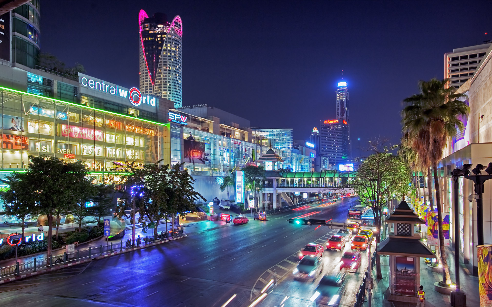

Туризм в Бангкоке
Столица Таиланда — город Бангкок — одно из самых удивительных туристических мест мира. Одно из древних названий Бангкока — «город-вечное сокровище». Даже если вы летите отдыхать в Паттайю, Хуа Хин или Самуи, выкроите время и посетите столицу Таиланда с экскурсией.
Достопримечательности
Красивые места
В Бангкоке более 400 храмов. Самый известный из них — Храм Рассвета, или же Храм Утренней Зари (Ват Арун). Он расположен на территории Королевского дворца, его стены украшены фарфоровыми изразцами, а вокруг расставлены фигурки Будды и слонов.

Кухня
Бангкок — это идеальное место для того чтобы познакомиться с тайской кухней. Здесь есть как большое количество ресторанов, ориентированных на туристов, так и обычных кафе, где ежедневно питаются местные жители.